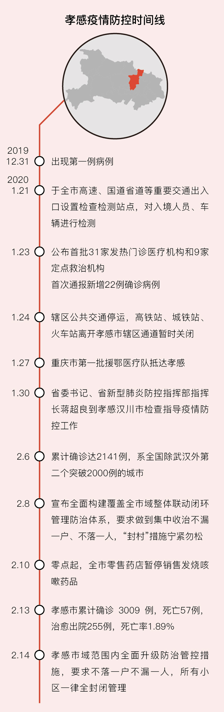

疫情危机中不被看见的人们：武汉周边城市百姓的自救行动
原文链接 备份链接 新型冠状病毒疫情像是一场突如其来的阴霾，在这个冬天笼罩了华中大地。相较于最受关注的武汉市民，周边城市的人们，像是处在阴霾边缘，遭受侵袭，却又不常被看见。面对重重困难，孝感、黄冈、黄石、信阳、荆州、天门……各个城市的百姓 …
封面报道之治理篇：
鄂州：考验疫区网格员 | 咸宁：接送病人在路上 | 襄阳：最后的出口 | 潜江：汪洋中的一条船
2月11日晚上11点半，湖北省孝感市孝南区某乡镇卫生院副院长赵明（化名），才从隔离病房里出来，消毒、回家。“腊月二十八（1月22日）以来，到现在一天我们都没休息，每晚都是如此。”赵明哑着嗓子说。该乡镇有5万常居住人口，他分管该卫生院救治业务。
孝感市与武汉市接壤，位于武汉城市圈内，常住人口490万，GDP在湖北省内排位第九，人口规模在黄冈、荆州、襄阳之后。孝感市区离武汉天河国际机场的距离仅30公里，离武汉市区仅60公里；高铁车程不到20分钟，自驾不到一个小时。武汉落入孝感人工作的生活圈中，春节返乡人潮如织。
多位孝感市居民告诉财新记者，返乡高峰期从1月20日开始，“而在武汉传出封城（1月23日）当天，回来的人数最多”。百度迁移数据亦显示，1月23日，武汉迁出规模中，流入到孝感占比16.91%，居所有流出目的地首位。据孝感市市长吴海涛披露，截至2月2日，孝感市人口506万人，其中武汉返乡人数39万人。
危险的种子就此埋下。但在此前，孝感与黄冈这些毗邻武汉的周边城市，武汉“不明原因肺炎”疫情并未引起足够警觉。1月23日，一位孝感市大悟县居民向政府写信，申请信息公开：“疫情蔓延，武汉作为新型冠状病毒肺炎的集中地引发全国人民关注。大悟与武汉距离近，有大量武汉或途经武汉的返程人员，是潜在的感染区。希望能够及时公开大悟县感染人数，并且以多种方式鼓励居民少出门、戴口罩、尽量不拜年”。这封来信，直至2月11日才被政府回复称，“大悟县一直按上级要求在通报防疫情况！”
1月24日，湖北省公布各市（州)新冠肺炎确诊病例时，孝感市于23日首次发现22例。也从那天起，赵明所在的卫生院不断接诊发热病人，“一天就是四五十个人”，这是他从业20年来，未曾遭遇过的局面。
向乡村扩散
乡村往往是信息传递的最后一站。一位孝感市云梦县基层医护人士称，1月21日，他们还开了年会。1月23日，才接到通知，全员到位，紧急上班。那一天起，赵明开始上报该镇的疑似病例。2月7日，孝感市累计病例2141例，患者数紧随武汉。“我们在全省市州中率先冲破2000大关，这个数字很敏感，一下子把全国的眼光都吸引到我们孝感来。”吴海涛在2月8日晚召开的全市疫情防控会议上开场就说，“给我们以巨大的工作压力和精神压力，我们一下子站到风口浪尖上”。
大量返乡者早已回到乡镇。“有的一个塆里面4000多人，有3000多人都是从武汉回来的。”“孝感肺炎自救行动”志愿者刘一飞估算。赵明担心的是村民防护意识差。“后来意识到要戴口罩，但还要出门、聊天。”“有人认为乡下空气好、跟武汉隔得远，病毒找不上自己，三五成群晒太阳，甚至聚众打麻将。”孝感市官方如此告诫。
这令外界担心，疫情向农村不断扩散。吴海涛把防疫战分为两个阶段，“第一个阶段叫做存量清除，第二个阶段叫做增量严控”。他宣布：“只要有一个村成为本地感染的重灾区，只要有一个村防控失控，乡镇党委书记无条件免职，其他干部连坐”。2月11日，孝感市发布“村支书开门五件事”，要求守住村大门。彼时，孝感市已经处理在疫情期间随意出村者达251人；处理聚会打牌者达212人。
强硬的管制手段还在升级。2月13日，孝感市大悟县进一步发布“战时管制”通告；2月14日，孝感市疫情防控指挥部决定在全市范围全面升级防治管控措施。
死命令已经下达，赵明忧心忡忡。“我们作为医务工作者，现在是一线的战士。但是，防护措施不到位，这就是面临的 最大问题。”赵明说，“乡村救治基本都靠我们自己，几个班子成员头发都急白了，关键是没多少资源可用。”
截至2月13日24时，孝感市累计病例已至3009例，含临床诊断病例80例。
基层承压
孝感市对下半场战役的部署，是切实建立整体联动机制、切断疾病传染源、构建闭环管理的防治体系。其中最核心的，就是彻底切断传染源。这一要求，落实到乡村的具体工作上，就是对发热病人的管理。
据赵明介绍，按孝感市要求，从2月8日起，所有的发热病人必须留置观察。“之前病人就挺多，但是没有具体的方案。”他介绍称，在此之前，他会根据流行病史问询、测体温、查血、拍胸片，对病人进行初步诊断；同时，他在医院成立了一个隔离病区，用以收治发热病人。
令他焦虑的是，发热病人过多，留观期长达7天到14天，医院已收治不过来。“我们医院现在是隔离点太少，发热病人太多，很矛盾。政府一句话，‘所有发热病人不准回去’，但政府也没地方给我，我们也不能把这些病人放回去了，我们让发热病人在医院不准走，病人在这儿发牢骚、发脾气、跟医生吵架，你说怎么搞？”
据赵明介绍，目前村上征用了宾馆作为隔离点，但还是不够；现在正在搭建活动板房，但是还需时日。“对比目前病情发展形势这么快，关键是配套工作速度慢啊。”
他越来越担心医护人员的感染。赵明所在的卫生院，有30位医护人员，但真正有医护资质和能力的，连10个人都没有；其中还要安排几位做普通门诊、药理，“有人中风了来看病，你说救不救？”
乡镇卫生院并无确诊能力，它们没有核酸检测的试剂盒，也没有CT拍片。赵明担心手下的一位护士被感染了，只能拿着该名护士很久前拍的胸片，对比着刚拍的片看来看去。赵明说，“我自己现在作为分管院长，最担心的问题就是我们的员工，要是有一个感染，我都无法交代。”
当下的关键任务，除了管理发热病人，就是初步筛选疑似病人。赵明所在县有三个隔离点，都要配备医护人员，人力明显不足。“有的医生一天都没休息，24小时工作状态。”
据财新记者了解，孝感辖内乡镇卫生院，已经出现了多例医护人员被感染的案例。一位孝感市云梦县某被感染的医护人员透露，她与同事们都是出现了发热症状，现在没有被集中隔离，而是在家自行隔离三天，等进一步确诊。
民间力量填补物资缺口
能够保护医护人员，让他们迅速救助病人的，首要的就是防护物资。
多位孝感市医护人员反映，防护物资仍然严重不足。2月9日，孝感市中心医院数据显示，该院医用外科口罩目前库存28447个，每日用4674个；N95口罩库存5120个，每日用2367个；防护面罩库存1501个，每日用1187个；隔离衣库存仅137套，而每日需用1187套。也就是说，即使是按最“充裕”的医用外科口罩来看，该医院也只能坚持6天。
孝感市中心医院物资紧缺至此，最基层、最简陋的各乡镇卫生院紧缺更甚。“从正常渠道比如疾控中心分配的物资，主要是满足大的定点医院的需求，分不到乡镇来。社会捐赠的物资，80%不符合标准，很多就是一个‘三无产品’。”赵明说，“就拿N95口罩来说，很多热心人士捐赠的是标准为2626的，但这主要是用于工业防尘的，对病毒细菌没有防护作用，我们需要1908标准的口罩。社会捐赠的防护服，我们去领过来之后，医生还没穿好就破了。现在是人命关天。”
刘一飞对物资紧缺深有体会：“一个乡镇卫生院，五六个医生，不可能有防护服这样的储备，很多没有防护服的，都是拿桌布披的。”组织者郭飞回忆起物资救援初期的忙乱：“很多人打电话过来的时候听声音都快崩溃了，大悟县那边电话里哭着跟我说有人感染，连夜开车过来拿物资。”
据刘一飞介绍，孝感辖内的汉川市有一家专门做防护服出口的企业，但是一些大的医院不敢用，因这类防护服没有“三证”，但是一线乡镇卫生院闻之，“都往这里涌来”。“把工厂库存都掏空了；现在原材料涨价都涨了10倍到20倍，工人工资都涨了5倍，我们催他们都（生产）出不来了。”
一位孝感市云梦县某医院护士称，其所在医院所有物资基本都靠民间捐赠，“如果没有民间，我们真的整个医院就全军覆没了。”她表示，医院一天要使用70套防护服，但目前惟一领到的是民间捐赠的130套，因此医院只能每人发给一套。而此前，“接触一线病人的才能穿防护服；下班了就脱下来，消个毒之后就给下一班人穿。”云梦县另一家定点发热门诊的物资对接人则表示，现存的防护服仅仅够四天用量，一次性手术帽就剩100个，免洗手洗消毒液更是奇缺，反复用酒精洗手，手都泡脱皮了，“志愿者挺好的，都在积极争取物资，但真正分到你手上的只有那么一点。”
随着封村行动进一步升级，从外采购的捐赠物资也难以抵达基层医院。刘一飞向财新记者描述了一天运输及发放物资的艰辛：早上8点出门找有关部门开出车证明，将物资运回需要6个到8个小时，再等远近医院派出救护车来取物资，结束时往往已经半夜1点。“我们尽可能等，让他们可以拿到物资，尤其是过来一趟不容易的乡镇卫生所。如果有防护服，一次性给他们30件-50件，能让他们坚持用上10天。”即使如此，仍有孝感市云梦县某乡镇卫生院采购物资的人士对财新记者指出，有志愿者一直在沟通，但是根本不能发货到该乡镇。吴海涛在前述会议上则强调，“封村措施宁可过，不可松”。
目前，赵明解决医护物资的办法，是通过私人关系，从孝感市某医院“搞来了一点”。这个流程不合规，但解了燃眉之急。通过正常流程跟县卫健局申请，则一直需要等待。
财新记者周泰来、实习记者黄晏浩对此文亦有贡献

相关报道：
此文限时免费阅读。感谢热心读者订阅财新通，支持新闻人一线探求真相！成为财新通会员，畅读财新网！
更多报道详见：【专题】新冠肺炎防疫全纪录（实时更新中）
[《财新周刊》印刷版，各大机场书店零售；按此优惠订阅，随时起刊，免费快递。]
原文链接 备份链接 新型冠状病毒疫情像是一场突如其来的阴霾，在这个冬天笼罩了华中大地。相较于最受关注的武汉市民，周边城市的人们，像是处在阴霾边缘，遭受侵袭，却又不常被看见。面对重重困难，孝感、黄冈、黄石、信阳、荆州、天门……各个城市的百姓 …
原文链接 备份链接 腊月二十九，我觉得再这样下去不行，得跟村长商量一下。 “村长，武汉肺炎都搞得‘封城’了，我们还有好多人聚众，要不要宣传……”话还没说完，听见电话那头，麻将粒儿磕得脆脆响。 陈家冲，一个平日里冷清得近乎空巢的农村，在今年 …
原文链接 备份链接 提前启动、提前统筹，就能节省很多时间，时间就是生命 *文 | 胡雯* 疫情爆发后，国内医疗资源迅速告急，防护服、口罩等关键物资缺口巨大，众多企业、NGO和个人第一时间开启全球大采购和捐赠，但却遭遇重重困难。 一连串问题 …
原文链接 备份链接 同力协契 共克时艰 武汉“封城”已三周，新冠肺炎全国感染人数还在持续上涨。 所有人都在期待拐点的到来，无数白衣天使依旧坚守在抗击疫情第一线，一刻不敢松懈。社会各界也在通过各种方式参与到这场没有硝烟的抗疫保卫战里。 这 …
原文链接 备份链接 向风暴眼输送防护物资并非易事武汉市中心医院医生发布微博求助，希望社会各界捐物资。图源：微博截图 2月12日晚，武汉中心医院的一位医生在微博发出求助。 这位身穿防护服的医生对镜头说，医用N95没有了，只能戴工业口罩，医 …